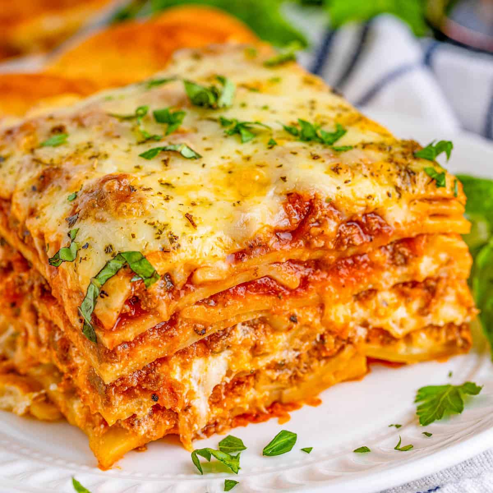

Lasagna:

Description:
Lasagna is a baked Italian pasta dish made by layering wide, flat pasta sheets with fillings such as meat, cheese, vegetables, and tomato or béchamel sauce, then baking until bubbly and golden.
It is commonly served as a main course in Italian cuisine.
Ingredients:
- Lasagna Noodles
- Ricotta Cheese
- Mozzarella Cheese
- Parmesan Cheese
- Ground Meat
- Marinara Sauce
- Seasonings
Optional Ingredients:
- Vegetables: Spinach, zucchini, or mushrooms can be added for extra nutrition.
- Eggs: Sometimes mixed with ricotta for a firmer texture.
- Béchamel sauce: A creamy white sauce that can be layered for richness.
Steps to Make Lasagna:
- Prepare Ingredients:
- Lasagna Noodles: Use regular lasagna noodles, which can be boiled or layered directly with sauce.
- Meat Sauce: Cook ground beef and/or Italian sausage with onions and garlic, then add marinara sauce.
- Cheese Mixture: Combine ricotta cheese, mozzarella, and Parmesan cheese.
- Cook the Noodles:
- Boiling: If boiling, cook the noodles in salted water until al dente, then drain and cool.
- No-Boil Method: If using regular noodles without pre-boiling, ensure they are fully covered in sauce during baking.
- Assemble the Lasagna:
- Layering: In a baking dish, start with a layer of meat sauce, followed by noodles, then the cheese mixture. Repeat the layers until all ingredients are used, finishing with sauce and cheese on top.
- Bake:
- Cover and Bake: Cover the dish with aluminum foil and bake in a preheated oven at 375°F (190°C) for about 45 minutes.
- Uncover: Remove the foil and bake for an additional 15 minutes until the cheese is bubbly and golden.
- Rest Before Serving:
- Cooling: Let the lasagna rest for at least 15 minutes after baking. This helps it hold its shape when cut.
Home